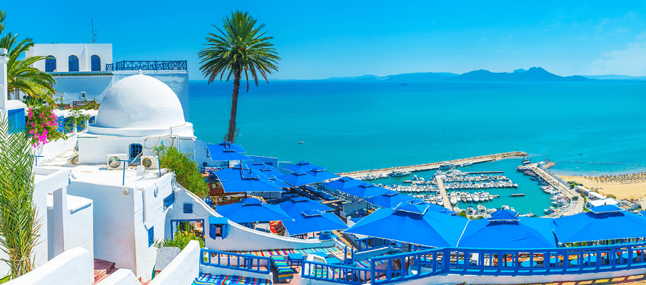
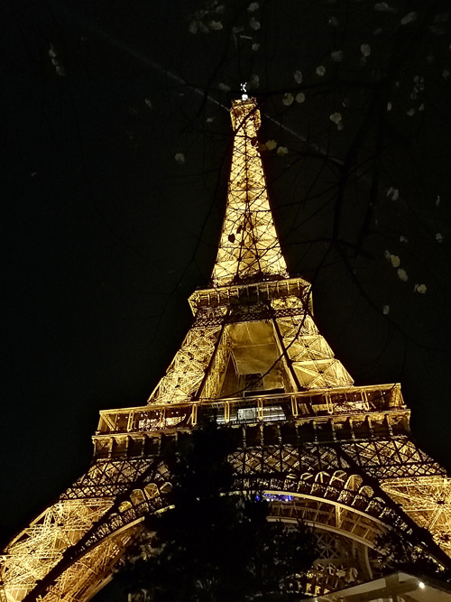

Sidi Bou Saïd
Sidi Bou Saïd is a picturesque coastal village located in Tunisia, known for its enchanting blue and white architecture and stunning views of the Mediterranean Sea. Perched atop a hillside overlooking the Gulf of Tunis.
Explorez les merveilles naturelles de Sidi Bousaid.
Découvrir
Paris
Paris, the capital city of France, is renowned for its timeless elegance, rich history, and cultural allure. Known as the "City of Lights" and a global center for art, fashion, gastronomy, and romance, Paris captivates millions of visitors each year. One of the most recognizable symbols of Paris is the Eiffel Tower, a towering iron lattice structure that offers breathtaking views of the city.
Explorez les merveilles naturelles de Paris.
Découvrir
Tokyo

Tokyo is the capital and largest city of Japan, located on the eastern coast of the island of Honshu. It is a vibrant and bustling metropolis known for its cutting-edge technology, modern architecture, and rich cultural heritage. Tokyo is a global financial center and a hub for business, fashion, and entertainment.
Explorez les merveilles naturelles de Tokyo.
Découvrir
Mexico city
Mexico City, the capital of Mexico, is a sprawling metropolis that captivates visitors with its rich history, vibrant culture, and diverse attractions. Situated in the Valley of Mexico, the city is known for its ancient ruins, colonial architecture, bustling markets, and modern cosmopolitan lifestyle.
Explorez les merveilles naturelles de Mexico City.
Découvrir